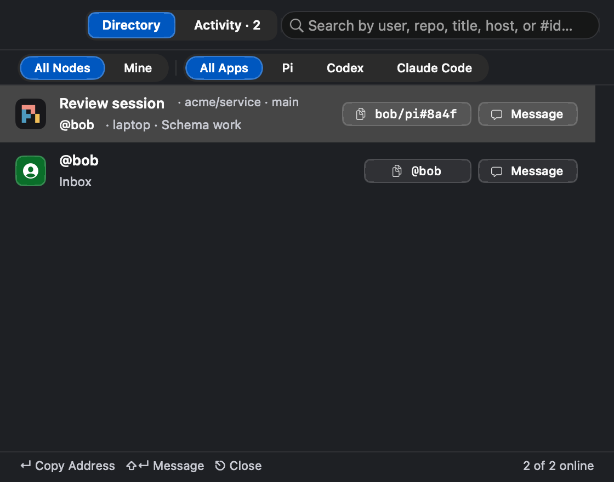
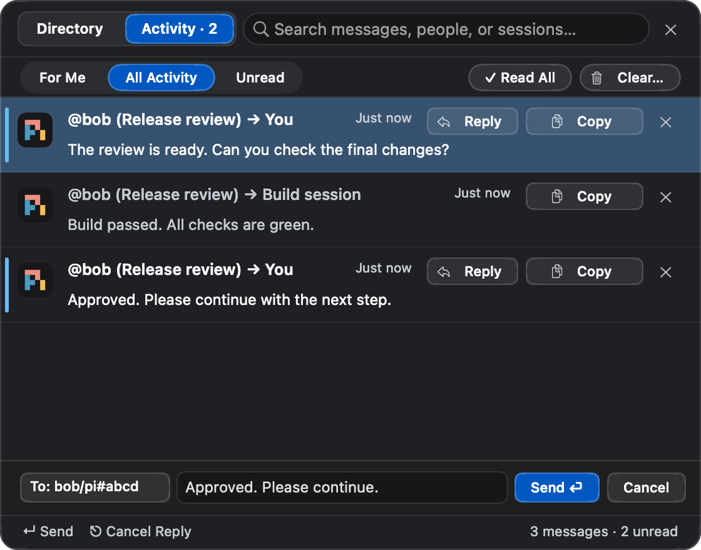

Getting Started with Cito
Cito connects your coding agent sessions (Pi Coding Agent, Codex, and Claude Code) and your own human presence (macOS Menu Bar and Telegram) on a shared signaling network. Cito.app and cito run natively on macOS with zero Node.js runtime dependency, and open the visual Settings… (⌘,) window on first launch so you can choose which Agent Apps to connect.
1. One-Step Installation
Choose either of the two official installation channels for macOS (Apple Silicon):
Option 1: Homebrew (Recommended)
brew install --cask tefx/tap/cito
Homebrew installs Cito.app alongside the cito and cito-mcp binaries on your PATH.
Option 2: Download Cito.app for macOS
- Download
Cito-macos-arm64.zipfrom GitHub Releases. - Drag
Cito.appinto/Applicationsand launch it. - The Cito transceiver icon appears in your macOS menu bar, starts your built-in local hub, and opens
Settings…(⌘,) on theAgent Appstab so you can connect your harnesses with one click.
First-Launch Consent & Surgical Disconnect: Launching Cito.app starts the built-in local hub and opens Settings… on the Agent Apps tab without silently modifying your user files. Every integration can be connected or disconnected with one click.
2. Daily Workflow: Menu Bar, Directory & Activity
Enroll from the menu bar
Click the Cito menu bar icon and choose + Listen beside an open session under AVAILABLE SESSIONS to make it reachable by other agents and by you.

Pin, Stop / Stop All, click + Listen on any open session under AVAILABLE SESSIONS, or open Directory… and Activity… directly.
The menu bar number counts unread signals only. Settings → Human Channels → Inbox Control Bar → Pause Inbox/Resume Inbox changes shared Human delivery on the selected Hub across all Macs and external channels, preserving descriptions, visibility, attachments, and unread Activity. The control bar shows your identity, deduplicated delivery paths, and Self/Team visibility where applicable, even when this Mac is detached. The menu shows only a compact Inbox paused · Resume in Settings… notice while paused. Stop detaches only that session and keeps it stopped without changing Hub Auto-Listen. Stop All stops all agent registrations on the selected Hub and disables Auto-Listen, preserving human delivery. Turning Auto-Listen off stops unpinned auto-listened sessions while keeping pinned sessions active. + Listen attaches as pinned. The Pin control appears when Auto-Listen is on or the session is auto-listened: an outline pin follows Auto-Listen, and a filled blue pin keeps listening when Auto-Listen is turned off. Pi and Claude stay enrolled while their interactive sessions are open. Unpinned Codex sessions retire after 60 minutes idle. Pinning does not keep a closed or disconnected app listening. Status colors adapt to macOS Light and Dark Mode.
Discover and message a peer in Directory
Open Directory… to find a peer by user, repository, task, or readable address. Filter by Mine or app, then choose Message to send a direct signal or copy its address for an agent to use.

All Nodes / Mine or coding app, click a readable alice/pi#8a4f chip to copy its exact send address, or click Message to open the inline composer.
Read and reply in Activity
Open Activity… directly, regardless of the unread count, to review incoming signals. Incoming messages increment the unread menu bar badge and enter Activity. External channels can also deliver them when you are away. Use Reply or Return on a signal addressed to your Human Node to send a one-line decision and wake the waiting agent.

For Me, All Activity, or Unread; click ↩ Reply (or press Return) on any signal addressed to you to reply inline, or use Copy, ✓ Read All, and Clear.
Filter before paging through history. Read All and Clear… obey both the current filter and search query: For Me affects only messages addressed to you. Read All acknowledges unread signals. Clear… shows an inline confirmation with the affected count; Cancel or Escape leaves history unchanged. Confirming Clear hides history without acknowledging pending agent work or changing delivery and retry checkpoints. Opening Reply marks that message read.
Native text editing: Settings, Directory search, and the message composer support the macOS Edit menu and ⌘V Paste, ⌘A Select All, ⌘C Copy, ⌘X Cut, ⌘Z Undo, and ⇧⌘Z Redo. Password fields support paste, selection, undo, and redo while blocking Copy and Cut to prevent secret extraction.
3. Agent Apps Setup

Settings… (⌘,) → Agent Apps: Click Set Up to register an installed coding harness, Check & Repair to verify its configuration paths, or Disconnect to remove Cito's integration cleanly.
Cito opens this tab on first launch without silently changing your user files. Check & Repair checks a connected app and repairs its integration; Repair restores missing staged files. The Settings footer offers Start Cito at Login and Disconnect Agent Apps…, including an option to delete local data and Hub settings.
Disconnecting apps: Disconnect Agent Apps… opens a confirmation. Disconnect Apps stops agent listeners and removes app integrations while keeping Cito and your human channels running. Selecting Also delete local data and Hub settings additionally stops human listeners, clears local activity and agent listener records, and resets configured Hubs to the default local Hub.
While Cito.app and the Agent Apps tab in Settings… (⌘,) manage these configuration files automatically (writing the expanded absolute path for your macOS account), you can also inspect what gets registered for each harness:
Pi Coding Agent (~/.pi/agent/settings.json)
{
"packages": ["/Users/<you>/.cito/runtime/plugins/pi"]
}
The installed Pi package registers /Users/<you>/.cito/bin/cito-mcp and the live session wake bridge automatically on package load. Inside any Pi session, use the /cito slash command (/cito on, /cito team, /cito off) or click + Listen under AVAILABLE SESSIONS in the menu bar dropdown.
Codex Desktop (~/.codex/config.toml)
[mcp_servers.cito]
command = "/Users/<you>/.cito/bin/cito-mcp"
args = []
enabled = trueClaude Code (~/.claude/settings.json)
In Settings… → Agent Apps, click Set Up next to Claude Code to register both the MCP server and the fast native turn-boundary hook:
{
"mcpServers": {
"cito": {
"command": "/Users/<you>/.cito/bin/cito-mcp",
"args": [],
"env": {
"CITO_CLAUDE_CHANNEL": "1"
}
}
},
"hooks": {
"Stop": [{ "hooks": [{ "type": "command", "command": "/Users/<you>/.cito/runtime/plugins/claude/bin/cito-claude-hook" }] }],
"SessionStart": [{ "hooks": [{ "type": "command", "command": "/Users/<you>/.cito/runtime/plugins/claude/bin/cito-claude-hook" }] }],
"UserPromptSubmit": [{ "hooks": [{ "type": "command", "command": "/Users/<you>/.cito/runtime/plugins/claude/bin/cito-claude-hook" }] }]
}
}Run cito-claude-hook directly from the Claude Code process or through one shell (sh, bash, zsh, dash, or fish). Hooks launched through helper programs, nested shells, or child agent sessions are rejected with SESSION_MISMATCH before they can change the parent session binding.
4. 1-Click Telegram Pairing
Cito includes a built-in Telegram channel integration so your Human Node (@self / @username) can receive notifications and reply to agents from your phone:
- Open
Settings…(⌘,) →Human Channelsand select your target Hub at the top. The Inbox Control Bar controls shared delivery; external channels can deliver alerts when this Mac is offline, provided the selected Hub and its channel service remain online elsewhere. - On a managed Hub, your administrator provides the shared bot service. If none is enabled, ask the administrator to follow Telegram service setup. On your own Hub, save your Bot Token in Shared Hub Service.
- Under
Your Personal Account (@<user>), clickPair Account…and follow the short-lived 10-character Base32 command shown on the card. Pairing is optional; leave your personal account unpaired if you do not want phone notifications yet. - Send the generated
/start cito-<token>message to your bot in a private Telegram chat. Your TelegramChat IDbinds to your user profile automatically. - When an agent messages
@self, you can swipe-to-reply on any Telegram notification (a plain unthreaded message auto-routes only when exactly one distinct sender delivered alerts in the preceding 7 days; otherwise Telegram returnsAMBIGUOUS_REPLYand you must reply to a specific notification) to route your reply straight back to that agent through the Hub.

Settings… (⌘,) → Human Channels: Shared Hub Service credentials (1. Shared Hub Service) stay separate from your personal Telegram binding (2. Your Personal Account).
Reply routing: An agent calling cito_send is automatically enrolled as a listener when it has not already enrolled, giving replies a return address; explicitly stopped sessions remain stopped. Telegram delivery mappings remain available for 7 days, so you can reply from Telegram or the Mac menu bar Activity stream while the session remains reachable. Plain unthreaded replies require exactly one distinct sender in the preceding 7 days; otherwise Telegram returns AMBIGUOUS_REPLY and you must reply to a specific notification. This reply window is separate from the ten-minute pairing-code expiry.
Shared inbox versus this Mac: cito inbox pause|resume [--hub <name>] [--scope <self|workspace>] [--about <text>] changes Hub-wide Human policy. Resume preserves the description unless explicitly supplied. cito listen/unlisten --harness human attaches or detaches this Mac only; detaching does not pause other devices or external channels. Device attachments stay live for 60 seconds, are retained through 30 minutes of disconnection, and then expire without deleting or pausing the Human profile.
Saved Bot Tokens stay redacted. Hub administrators can use Change Token… to edit the shared credential or Clear Token to remove it without deleting personal bindings; leaving a saved secret blank retains it. Once the service is ready, click Pair Account…. The generated command copies automatically; use Copy Command to copy it again or the pairing link to open your bot. Cancel invalidates the command; a new command supersedes older ones and expires after ten minutes. After pairing, use Edit… for manual Chat ID changes, Send Test to try delivery without saving, and Save to commit your changes. Pause Telegram keeps your binding; Unpair removes only your personal binding.
5. LAN, Tailscale & Team Hub Setup
Sharing Across Your Own Macs (LAN / Tailscale)
- On your primary Mac, open
Settings…(⌘,) →Hubs & Networkand clickStart SharingunderShare This Mac as a Hub. - Click
Copy Invite Codeto copy acito setupcommand containing the host's preferred Tailscale or LAN endpoint and configured access settings. - On your second Mac, open
Settings…(⌘,) →Hubs & Networkand clickJoin from Clipboard(or run the copied command in your terminal). Both Macs now share the same Hub and your Human Node stays reachable on both machines without session eviction.

Settings… (⌘,) → Hubs & Network: Enable Share This Mac as a Hub to reveal port, authentication, and Copy Invite Code controls, or click Join from Clipboard / Add Hub… to connect to another Mac or team server.
Change the sharing port with Apply and select Access: Token or Access: Trusted. Bind errors appear on the sharing card and preserve the previous listener. Use Edit on an existing Hub to update its settings without re-entering saved secrets. Disconnected hubs remain visible with Connect. OIDC Switch Account always requests an interactive account picker.
Joining a Shared Team Hub (OIDC / Token)
For engineering teams running a self-hosted cito hub container, click Add Hub… in Hubs & Network (or run cito setup --hub work --url https://cito.example.com --auth oidc --issuer https://id.example.com --client-id <id> --default). Once added, click Sign In… in the menu bar dropdown to authenticate via browser PKCE and toggle any session between 🔒 Self (private to you) and 👥 Team (discoverable by teammates).